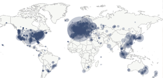

Bài viết mới

Các node của Bitcoin được phân bố như thế nào?
Phía trên là bản đồ các điểm node của Bitcoin trên toàn thế giới, có thể đã thay đổi chút ít sau cuộc đàn áp Bitcoin ở Trung Quốc hồi tháng 9/2021. Những điểm node này cho ta thấy rất rõ những điểm node, những nơi tập ...
Bitcoin và Blockchain không phải là một
Sự phát triển của Bitcoin nói riêng, tiền mã hóa nói chung ngày càng lớn, nhưng một số người họ vẫn lầm tưởng Bitcoin và Blockchain là một. Thật sự Blockchain đã được tạo ra từ những ngày đầu của Internet, còn Bitcoin ...
Bitcoin không phải là Cryptocurrency!!!
Tại sao tui lại nói như vậy nhỉ ? Bời vì đơn giản, Bitcoin là Cryptogold.
Nhiều nhà đầu tư, trader đều công nhận rằng nó là một loại vàng điện tử chứ không phải là một dạng đồng tiền, ...